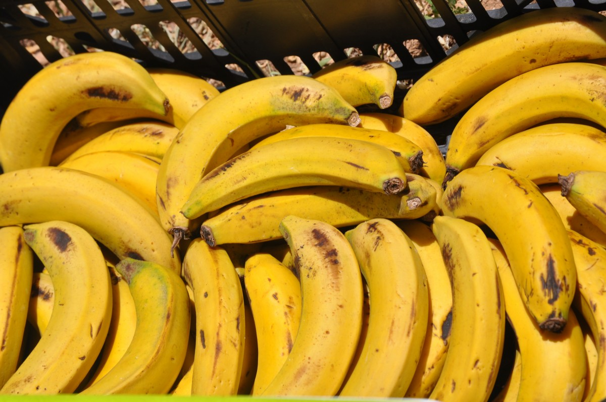
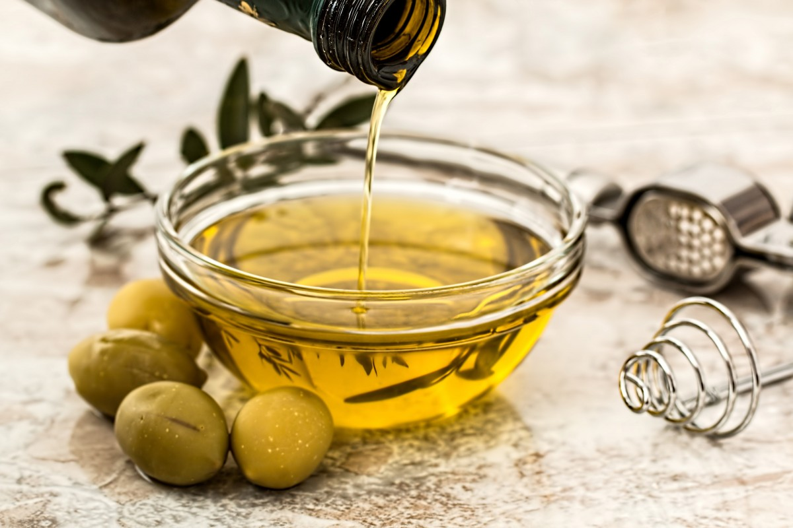
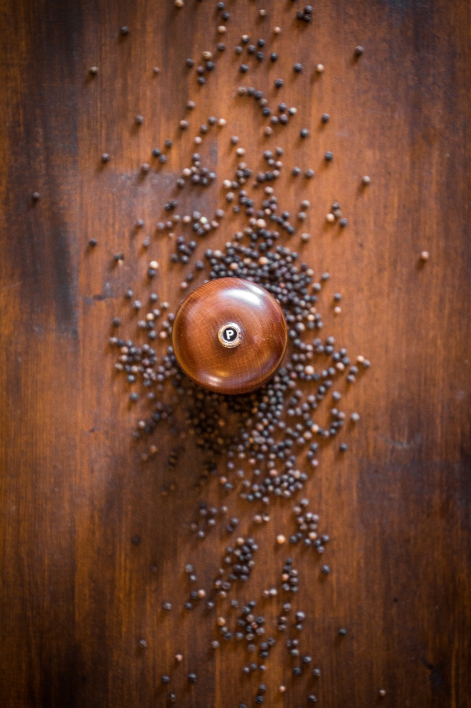

Temps de préparations: 30 min
Historique
L'Aloko, ou "banane plantain frit", est un plat populaire dans la cuisine béninoise
et dans plusieurs autres pays d'Afrique de l'Ouest. Ce plat simple mais délicieux fait partie
intégrante des repas quotidiens au Bénin et est apprécié pour sa richesse en saveurs et sa polyvalence.
Mais son origine et son histoire remontent à bien plus longtemps.
L'aloko trouve ses racines dans la culture agricole des peuples d'Afrique de l'Ouest, notamment les peuples Mandingues et Fon,
qui cultivent la banane plantain depuis des siècles. La banane plantain, une variété de banane plus grosse et plus ferme que la banane ordinaire,
est un aliment de base dans la région. Ce fruit est cultivé principalement dans les zones tropicales, et au Bénin, il pousse abondamment dans les régions comme le Sud, où le climat est propice à sa culture.
Historiquement, l'aloko était un plat de rue qui était consommé par les paysans pendant leurs journées de travail, car il est facile à préparer,
nourrissant et peut être mangé à tout moment de la journée. Il est donc devenu un plat populaire, accessible à toutes les couches de la société, des ouvriers aux familles urbaines.
Ingrédients pour deux (02) personnes
 |
 |
| Banane plantain |
Huile d'olive |
|
 |
| Poivre du moulin |
Sel fin |
Préparations
- Faites chauffer l’huile d’olive dans une casserole à fond épais.
Pour commencer, prenez une casserole à fond épais, de préférence une petite marmite ou une poêle profonde qui permettra à l'huile de chauffer de manière uniforme. Versez une quantité généreuse d'huile d'olive, car il est essentiel que les rondelles de bananes soient bien immergées dans l'huile pour cuire uniformément.
Faites chauffer l'huile à feu moyen. Vérifiez la température de l'huile en y plongeant une petite miette de pain ou un petit morceau de banane ; si l'huile grésille autour de l'aliment, c'est qu'elle est prête pour la cuisson.
- Épluchez les bananes plantain.
Prenez chaque banane plantain, et à l’aide d’un couteau bien aiguisé, coupez les deux extrémités de la banane. Ensuite, incisez légèrement la peau sur toute la longueur de la banane, en prenant soin de ne pas couper trop profondément.
Une fois que la peau est incisée, retirez-la délicatement à la main. Cela peut parfois être un peu difficile, surtout si la banane est très mûre, mais un petit coup de couteau peut aider à détacher la peau plus facilement.
Il est recommandé d'utiliser des bananes plantains mûres, mais pas trop, afin qu’elles soient sucrées sans être trop molles. Une banane trop mûre risque de devenir trop collante à la cuisson.
- Tranchez ensuite les bananes plantain en rondelles ou en tranches.
Une fois les bananes épluchées, placez-les sur une planche à découper. Utilisez un couteau bien tranchant pour découper la banane en rondelles d'environ 1 à 1,5 cm d'épaisseur.
Vous pouvez aussi couper les bananes en biais pour obtenir des tranches plus longues et légèrement en forme de losange, ce qui peut apporter un aspect visuel intéressant. L'épaisseur de chaque tranche est importante pour garantir une cuisson uniforme : ni trop fine pour éviter de brûler, ni trop épaisse pour éviter que l’intérieur ne reste cru.
- Salez et poivrez vos rondelles de bananes plantain sur les deux faces.
Dans un petit bol, préparez un mélange de sel et de poivre (vous pouvez également ajouter un peu de piment ou de paprika si vous aimez les plats épicés).
Saupoudrez légèrement les tranches de bananes sur chaque face avec ce mélange d’épices. Le sel va non seulement rehausser le goût, mais aussi aider à faire ressortir la douceur naturelle de la banane plantain pendant la friture.
Veillez à bien assaisonner chaque face de la rondelle pour un goût bien équilibré.
- Plongez les rondelles de bananes plantain dans l’huile chaude. Faites-les cuire quelques minutes jusqu’à ce que chaque tranche soit bien dorée.
Une fois que l'huile est suffisamment chaude, plongez délicatement les rondelles de bananes plantain dans la casserole. Ne surchargez pas la poêle, car cela risquerait de faire baisser la température de l'huile et de rendre la cuisson moins uniforme.
Laissez cuire les rondelles pendant environ 2 à 3 minutes de chaque côté, ou jusqu'à ce qu'elles prennent une belle couleur dorée et légèrement croustillante. Laissez-les cuire à feu moyen pour éviter qu’elles ne brûlent trop vite à l’extérieur tout en restant crues à l’intérieur.
Vous pouvez tester la cuisson en insérant une fourchette dans une tranche : elle doit être tendre à l’intérieur, tout en étant bien dorée et légèrement croquante à l'extérieur.
- Déposez les aloko aux bananes sur du papier absorbant pour retirer l’excédent de gras. Rectifiez l’assaisonnement si nécessaire.
Une fois les rondelles bien dorées et cuites, utilisez une écumoire ou une pince pour les sortir délicatement de l'huile et placez-les sur du papier absorbant. Cela permet de retirer l'excédent de gras et d’obtenir des aloko plus légers.
Profitez de cette étape pour vérifier l’assaisonnement. Si vous trouvez que les rondelles manquent de sel ou de poivre, n'hésitez pas à rectifier l'assaisonnement en les saupoudrant légèrement.>
- Alignez vos aloko sur des brochettes et servez-les bien chauds, avec du riz blanc, un poulet braisé et une sauce piquante pour un plat complet et savoureux.
Si vous souhaitez servir les aloko de manière plus élégante ou pratique, vous pouvez les enfiler sur des brochettes. Cela permet de les présenter joliment et facilite leur dégustation.
Disposez les aloko sur une assiette accompagnée de riz blanc bien cuit. Le riz peut être légèrement parfumé avec des épices comme le cumin ou la noix de coco pour ajouter de la saveur.
Servez également du poulet braisé (ou une autre viande de votre choix), bien grillé et savoureux. Vous pouvez l’accompagner d'une sauce piquante maison, à base de tomates, d'oignons et de piment, pour ajouter une touche épicée et relevée à ce plat.
Bon appétit !
Avec ces étapes détaillées, vous êtes prêts à réaliser un délicieux plat d’aloko, savoureux et bien assaisonné, qui plaira à coup sûr à tous vos invités ou votre famille. Ce plat simple mais riche en saveurs, accompagné de riz, poulet et sauce piquante, vous transportera directement en Afrique de l'Ouest.
Retrouver ici d'autres recettes d'Alloco.